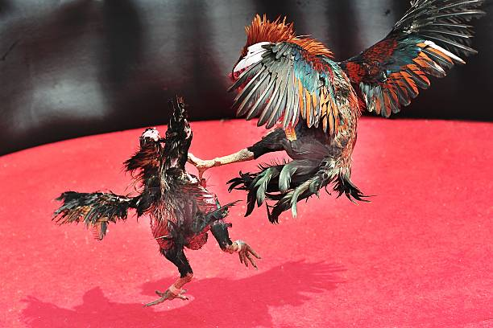
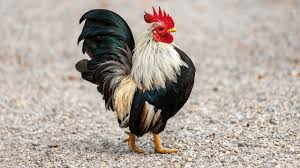

Los origenes estan cargados de historiaL: Lucha, emocion, y muchas disputas para que el combate de gallos fuera legal y se vuelva parte de la cultura de hpoy en dia de muchos paises

¿Que significa realmente los gallos de pelea para la cultura peruana?

En este tipos de gallo de combate, la variedad de especies se hace notar, desde España hasta casi todo el continente americano

Los origenes estan cargados de historiaL: Lucha, emocion, y muchas disputas para que el combate de gallos fuera legal y se vuelva parte de la cultura de hpoy en dia de muchos paises
¿Que valor aporta para la cultura? Es una muy buena pregunta y aqui te enseñaremos porque tiene gran importancia para la cultura del pais entero ydescubre todo el valor sentimental y cultural de las peleas de gallos